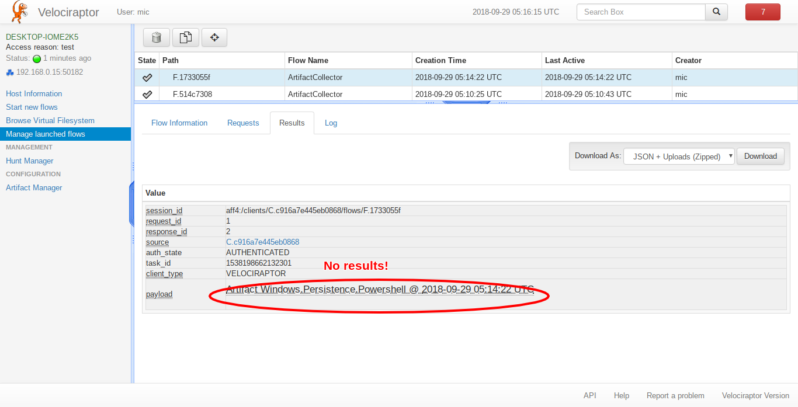
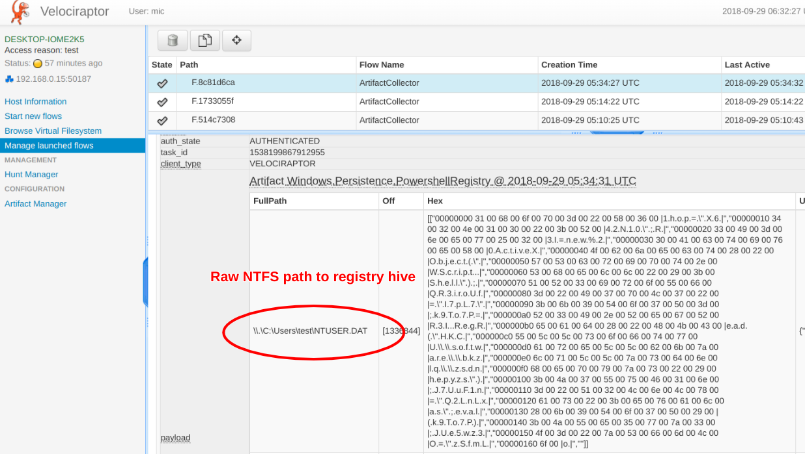

Detecting powershell persistence with Velociraptor and Yara
::: {.admonition} Update
As of the latest release of Velociraptor we have raw registry parsing which can also be done via raw NTFS to get around file locking. It is no longer necessary to run yara scans and parse with regripper as shown here. :::
I was watching the SANS DFIR Summit 2018 videos on youtube and came across Mari DeGrazia\’s talk titled \“Finding and Decoding Malicious Powershell Scripts\”. This is an excellent talk and it really contains a wealth of information. It seems that Powershell is really popular these days, allowing attacker to \“live off the land\” by installing fully functional reverse shells and backdoors, in a few lines of obfuscated scripts.
Mari went through a number of examples and also expanded on some in her blog post Malicious PowerShell in the Registry: Persistence, where she documents persistence through an autorun key launching powershell to execute a payload within another registry key.
A similar persistence mechanism is documented by David Kennedy from Binary defence in his post PowerShell Injection with Fileless Payload Persistence and Bypass Techniques. In that case an msha.exe link was stored in the user\’s Run key which executed a payload from another registry key.
I was eager to write a Velociraptor artifact to attempt to detect such keys using a YARA signature. Of course signature based detection is not as robust as behavioural analysis but it is quick and usually quite effective.
I thought it was still quite instructive to document how one can develop the VQL queries for a simple Velociraptor artifact. We will be developing the artifact interactively on a Windows system.
Preparation
Our artifact will attempt to detect the persistence mechanism detailed in the above posts. We start by adding a value to our test user account under the key
Key: "HKEY_CURRENT_USER\Software\Microsoft\Windows\CurrentVersion\Run"
Value: "C:\Windows\system32\mshta.exe"
Data:
about:<script>c1hop="X642N10";R3I=new%20ActiveXObject("WScript.Shell");
QR3iroUf="I7pL7";k9To7P=R3I.RegRead("HKCU\\software\\bkzlq\\zsdnhepyzs");
J7UuF1n="Q2LnLxas";eval(k9To7P);JUe5wz3O="zSfmLod";</script>
Defining the Artifact.
We create a directory called \“artifacts\” then create a new file inside it called powershell_persistence.yaml. Velociraptor artifacts are just YAML files that can be loaded at runtime using the --definitions flag.
Every artifact has a name, by convention the name is separated into its major categories. We will call ours Windows.Persistence.Powershell:
name: Windows.Persistence.Powershell
This is the minimum required for Velociraptor to identify it. We can see a listing of all artifacts Velociraptor knows about using the \“artifacts list\” command:
F:\>velociraptor.exe --definitions artifacts artifacts list
INFO:2018/09/28 07:59:40 Loaded 34 built in artifacts
Linux.Applications.Chrome.Extensions
Linux.Applications.Chrome.Extensions.Upload
…
Windows.Persistence.Powershell
...
Windows.Sys.Users
We can collect the artifact simply by using the \“artifacts collect\” command:
F:\>velociraptor.exe --definitions artifacts artifacts collect Windows.Persistence.Powershell
INFO:2018/09/28 20:01:32 Loaded 34 built in artifacts
Ok so Velociraptor can load and collect this new artifact, but as yet it does nothing! We need to think about what exactly we want to collect.
We know we want to search for all values in the Run/RunOnce hive of all the users. Let\’s first see if we can retrieve all the values using a glob:
name: Windows.Persistence.Powershell
parameters:
- name: keyGlob
default: "HKEY_USERS\\*\\Software\\Microsoft\\Windows\
\\CurrentVersion\\{Run,RunOnce}\\*"
sources:
- precondition:
SELECT OS from info() where OS = "windows"
queries:
- |
SELECT FullPath from glob(
globs=keyGlob,
accessor="reg"
)
This artifact demonstrates a few concepts:
- We can define parameters by name, and reference them from within the VQL query. This keeps the VQL query clean and more readable.
- We can define a precondition on the artifact. If the precondition is not met, the VQL query will not be run.
Lets run this artifact:
F:\>velociraptor.exe --definitions artifacts artifacts collect Windows.Persistence.Powershell
INFO:2018/09/28 20:51:47 Loaded 34 built in artifacts
+--------------------------------+
| FullPath |
+--------------------------------+
| HKEY_USERS\S-1-5-19\Software\M |
| icrosoft\Windows\CurrentVersio |
| n\Run\OneDriveSetup |
| HKEY_USERS\S-1-5-20\Software\M |
| icrosoft\Windows\CurrentVersio |
| n\Run\OneDriveSetup |
| HKEY_USERS\S-1-5-21-546003962- |
| 2713609280-610790815-1001\Soft |
| ware\Microsoft\Windows\Current |
| Version\Run\"C:\Windows\system |
| 32\mshta.exe" |
+--------------------------------+
Artifact:
Windows.Persistence.Powershell
It returns a couple of results so there are two Run/RunOnce values defined. For this artifact, we only want to return those entries which match a specific yara signature. We can work later on improving the yara signature, but for now let\’s just detect uses of the eval() powershell command within 500 characters of an ActiveXObject instantiation. We will try to match each value returned from the Run keys with this object:
name: Windows.Persistence.Powershell
parameters:
- name: keyGlob
default: "HKEY_USERS\\*\\Software\\Microsoft\\Windows\
\\CurrentVersion\\{Run,RunOnce}\\*"
- name: yaraRule
default: |
rule Powershell {
strings:
$ = /ActiveXObject.{,500}eval/ nocase
$ = /ActiveXObject.{,500}eval/ wide nocase
condition:
any of them
}
sources:
- precondition:
SELECT OS from info() where OS = "windows"
queries:
- |
// This is a stored query
LET file = SELECT FullPath from glob(
globs=keyGlob,
accessor="reg"
)
- |
SELECT * FROM yara(
rules=yaraRule,
files=file.FullPath, // This will expand to a list of paths.
accessor="reg")
This version recovers the FullPath of all the Run/RunOnce values and stores them in a stored query. We then issue another query that applies the yara rule on these values:
F:\>velociraptor.exe --definitions artifacts artifacts collect Windows.Persistence.Powershell
INFO:2018/09/28 21:29:10 Loaded 34 built in artifacts
+------------+------+------+--------------------------------+--------------------------------+
| Rule | Meta | Tags | Strings | File |
+------------+------+------+--------------------------------+--------------------------------+
| Powershell | | | {"Name":"$","Offset":40,"HexDa | {"FullPath":"HKEY_USERS\\S-1-5 |
| | | | ta":["00000000 41 63 74 69 76 | -21-546003962-2713609280-61079 |
| | | | 65 58 4f 62 6a 65 63 74 28 2 | 0815-1001\\Software\\Microsoft |
| | | | 2 57 |ActiveXObject(\"W|","00 | \\Windows\\CurrentVersion\\Run |
| | | | 000010 53 63 72 69 70 74 2e 5 | \\\"C:\\Windows\\system32\\msh |
| | | | 3 68 65 6c 6c 22 29 3b 51 |S | ta.exe\"","Type":"SZ","Data":{ |
| | | | cript.Shell\");Q|","00000020 | "type":"SZ","value":"about:\u0 |
| | | | 52 33 69 72 6f 55 66 3d 22 49 | 03cscript\u003ec1hop=\"X642N10 |
| | | | 37 70 4c 37 22 3b |R3iroUf=\ | \";R3I=new%20ActiveXObject(\"W |
| | | | "I7pL7\";|","00000030 6b 39 5 | Script.Shell\");QR3iroUf=\"I7p |
| | | | 4 6f 37 50 3d 52 33 49 2e 52 | L7\";k9To7P=R3I.RegRead(\"HKCU |
| | | | 65 67 52 65 |k9To7P=R3I.RegRe | \\\\software\\\\bkzlq\\\\zsdnh |
| | | | |","00000040 61 64 28 22 48 4 | epyzs\");J7UuF1n=\"Q2LnLxas\"; |
| | | | b 43 55 5c 5c 73 6f 66 74 77 | eval(k9To7P);JUe5wz3O=\"zSfmLo |
| | | | 61 |ad(\"HKCU\\\\softwa|","00 | d\";\u003c/script\u003e"},"Mti |
| | | | 000050 72 65 5c 5c 62 6b 7a 6 | me":{"sec":1538191253,"usec":1 |
| | | | c 71 5c 5c 7a 73 64 6e 68 |r | 538191253231489700},"Ctime":{" |
| | | | e\\\\bkzlq\\\\zsdnh|","0000006 | sec":1538191253,"usec":1538191 |
| | | | 0 65 70 79 7a 73 22 29 3b 4a | 253231489700},"Atime":{"sec":1 |
| | | | 37 55 75 46 31 6e 3d |epyzs\ | 538191253,"usec":1538191253231 |
| | | | ");J7UuF1n=|","00000070 22 51 | 489700}} |
We can see that the last query returns 5 columns, but each column actually contains objects with quite a lot of additional information. For example, the File column returns information about the file that matched the yara rule (its filename, timestamps etc). The output is a bit confusing so we just return the relevant columns. We can replace the * in the last query with a curated list of columns to return:
SELECT File.FullPath as ValueName, File.Data.value as Contents,
timestamp(epoch=File.Mtime.Sec) as ModTime
FROM yara(rules=yaraRule,
files=file.FullPath,
accessor="reg")
Which results in the quite readable:
F:\>velociraptor.exe --definitions artifacts artifacts collect Windows.Persistence.Powershell
INFO:2018/09/28 21:42:18 Loaded 34 built in artifacts
+--------------------------------+--------------------------------+---------------------------+
| ValueName | Contents | ModTime |
+--------------------------------+--------------------------------+---------------------------+
| HKEY_USERS\S-1-5-21-546003962- | about:<script>c1hop="X642N10"; | 2018-09-28T20:20:53-07:00 |
| 2713609280-610790815-1001\Soft | R3I=new%20ActiveXObject("WScri | |
| ware\Microsoft\Windows\Current | pt.Shell");QR3iroUf="I7pL7";k9 | |
| Version\Run\"C:\Windows\system | To7P=R3I.RegRead("HKCU\\softwa | |
| 32\mshta.exe" | re\\bkzlq\\zsdnhepyzs");J7UuF1 | |
| | n="Q2LnLxas";eval(k9To7P);JUe5 | |
| | wz3O="zSfmLod";</script> | |
+--------------------------------+--------------------------------+---------------------------+
Artifact: Windows.Persistence.Powershell
Great! This works and only returns values that match the yara signature we developed.
Testing the artifact
Let\’s test this artifact for real now. We restart the frontend with the --definition flag and this makes the new artifact available in the GUI under the Artifact Collector flow. The GUI also shows the entire artifact we defined so we can see what VQL will be run:

Launching the flow appears to work and shows exactly the same result as we collected on the command line:

But wait! There is a problem!
When we log out of the machine, and then rerun the artifact it returns no results!

Why is that? Experienced incident responders would recognize that any artifact that works from the HKEY_USERS registry hive is inherently unreliable. This is because the HKEY_USERS hive is not a real hive -it is a place where Windows mounts the user\’s hive when the user logs in.
How does HKEY_USERS hive work?
Windows implements the concept of user profiles. Each user has a personal registry hive that stores user specific settings. It is actually a file stored on their home directory called ntuser.dat. When a user logs into the workstation, the file may be synced from the domain controller and then it is mounted under the HKEY_USERS\<sid> registry hive.
This means that when the user logs out, their user registry hive is unmounted and does not appear in HKEY_USERS any longer. Any artifacts based around the HKEY_USERS hive will work only if the collection is run when a user is logged in.
This is obviously not what we want when we hunt for persistence! We want to make sure that none of the users on the system have this persistence mechanism installed. You can imagine a case where a system has been cleaned up but then a user logs into the machine, thereby reinfecting it!
How to fix this?
Yara is a very powerful tool because it allows us to search for patterns in amorphous data (such as process memory and structured files) without having to fully understand the structure of the data we are searching for. Of course this has its limitations, but yara can raise a red flag if the signature matches the file, and we can analyse this file more carefully later.
In this case, we can not rely on globbing the HKEY_USER registry hive, so maybe we can just search the files that back these hives? We know that each user on the system has an NTUSER.DAT file in their home directory (usually C:\\Users\\<username>), so let\’s write an artifact to find these files. We can reuse the artifact Windows.Sys.Users that reports all user accounts on a system (we display it as JSON to enhance readability):
F:\>velociraptor.exe artifacts collect Windows.Sys.Users --format json
INFO:2018/09/28 22:44:26 Loaded 34 built in artifacts
{
"Description": "",
"Directory": "C:\\Users\\test",
"Gid": 513,
"Name": "test",
"Type": "local",
"UUID": "S-1-5-21-546003962-2713609280-610790815-1001",
"Uid": 1001
},
{
"Description": "",
"Directory": "C:\\Users\\user1",
"Gid": 513,
"Name": "user1",
"Type": "local",
"UUID": "S-1-5-21-546003962-2713609280-610790815-1003",
"Uid": 1003
},
So we just want to YARA scan the NTUSER.DAT file in each home directory:
SELECT * from foreach(
row={
SELECT Name, Directory as HomeDir
FROM Artifact.Windows.Sys.Users()
WHERE Directory.value and Gid
},
query={
SELECT File.FullPath As FullPath,
Strings.Offset AS Off,
Strings.HexData As Hex,
upload(file=File.FullPath, accessor="ntfs") AS Upload
FROM yara(
files="\\\\.\\" + HomeDir + "\\ntuser.dat",
accessor="ntfs",
rules=yaraRule, context=10)
})
This query:
- Selects all the usernames and their home directory from the Windows.Sys.Users artifact.
- For each directory prepends \\\\.\\ and appends \“ntuser.dat\“. For example c:\\Users\\test becomes \\\\.\\c:\\Users\\test\\NTUSER.dat
- The file is accessed using the NTFS filesystem accessor. This is necessary because the registry hive is locked if the user is logged in. Therefore we must access it using raw NTFS parsing to bypass the OS locking.
- For each file that matches the yara expression, we upload the file to the server for further analysis.
Lets run this new artifact on the server:

Unlike the previous artifact, this one simply returns the YARA hit, but because we do not have any context on which value contained the signature, or even if it had been deleted. Luckily we uploaded the raw registry hive for further analysis, and we can use a tool such as RegRipper to extract more information from the hive:
$ wine rip.exe -p user_run -r
/tmp/velociraptor/clients/C.c916a7e445eb0868/uploads/F.078739d6/ntfs/
%5C%5C.%5CC%3A%5CUsers%5Cuser1%5CNTUSER.DAT
Launching user_run v.20140115
user_run v.20140115
(NTUSER.DAT) [Autostart] Get autostart key contents from NTUSER.DAT hive
Software\Microsoft\Windows\CurrentVersion\Run
LastWrite Time Thu Sep 27 01:19:08 2018 (UTC)
OneDrive: "C:\Users\user1\AppData\Local\Microsoft\OneDrive\OneDrive.exe"
/background
c:\windows\system32\mshta.exe: about:<script>c1hop="X642N10";
R3I=new%20ActiveXObject("WScript.Shell");
QR3iroUf="I7pL7";k9To7P=R3I.RegRead("HKCU\\software\\
bkzlq\\zsdnhepyzs");J7UuF1n="Q2LnLxas";eval(k9To7P);JUe5wz3O="zSfmLod";</script>
Note above how we can simply retrieve the uploaded file from Velociraptor\’s filestore. Velociraptor stores uploaded files on the filesystem within the flow\’s directory.
Conclusions
In this blog post we saw how to utilize YARA to find suspicious powershell persistence mechanisms. YARA is a powerful tool and using Velociraptor\’s artifacts we can apply it to files, registry values, and raw NTFS files such as locked registry hives and the pagefile.
We also saw some of the inherent problems with relying on the HKEY_USERS registry hive for detection - the hive is only present when a user is logged in so when we hunt, we might miss those users who are currently logged out. We saw how YARA can be used to detect suspicious patterns in raw registry hive files and how artifacts may retrieve those files for further analysis.